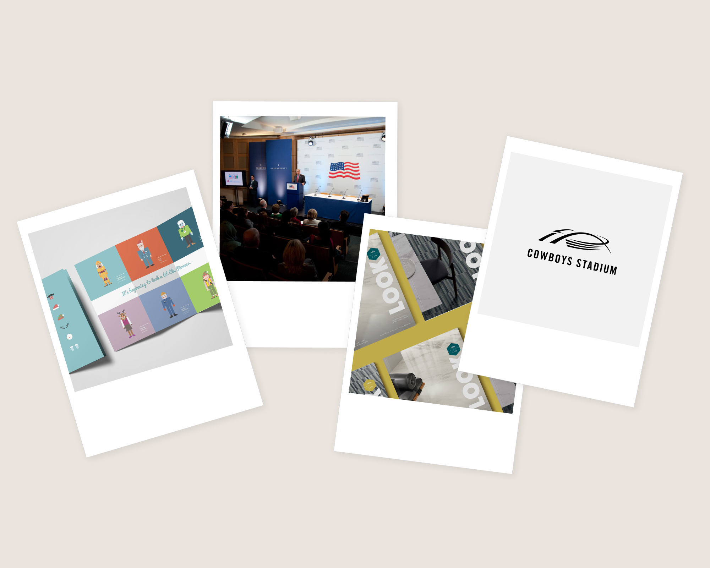

Chapter One
Art Director, Print & Brand
Ten years designing for print annual reports, luxury invitations, event materials, brand systems. Work with weight and texture. I developed a deep instinct for how visual decisions shape the way people feel about what they're reading, holding, or attending.
What print taught me: hierarchy, proportion, and craft aren't decorative choices they're how information communicates. That conviction carries into everything I do in digital.